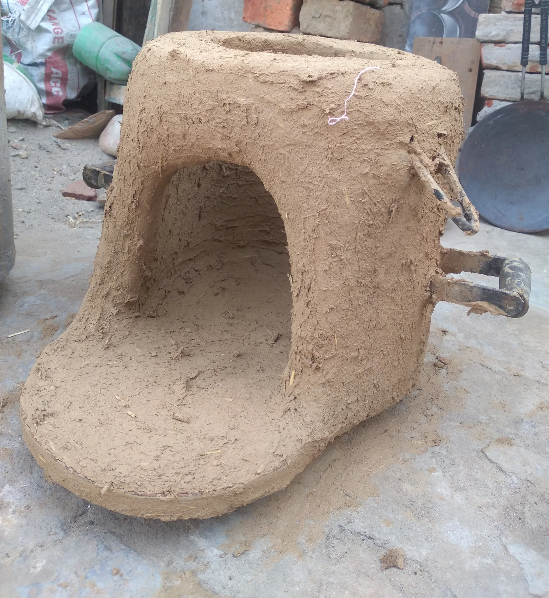

OBJECT ARCHIVE · ਵਿਰਾਸਤੀ ਵਸਤੂ

An object shaped by everyday knowledge.
The chulha was central to many Punjabi kitchens and domestic routines. Its construction differed by household, region and available materials. Memories of cooking, fuel, utensils and shared meals are part of its cultural story.
ਚੁੱਲ੍ਹਾ ਪੰਜਾਬ ਦੇ ਕਈ ਘਰਾਂ ਦੀ ਰਸੋਈ ਅਤੇ ਰੋਜ਼ਾਨਾ ਜੀਵਨ ਦਾ ਕੇਂਦਰ ਰਿਹਾ ਹੈ। ਇਸ ਦੀ ਬਣਤਰ ਘਰ, ਇਲਾਕੇ ਅਤੇ ਉਪਲਬਧ ਸਮੱਗਰੀ ਅਨੁਸਾਰ ਵੱਖਰੀ ਹੁੰਦੀ ਸੀ। ਖਾਣਾ ਪਕਾਉਣ, ਬਾਲਣ, ਭਾਂਡਿਆਂ ਅਤੇ ਇਕੱਠੇ ਬੈਠ ਕੇ ਖਾਣ ਦੀਆਂ ਯਾਦਾਂ ਇਸ ਦੀ ਵਿਰਾਸਤ ਦਾ ਹਿੱਸਾ ਹਨ।
Materials and making
Often clay, brick or other locally available materials. Materials and construction may differ by locality and period; this description should be matched to a dated, photographed example before being treated as a complete technical specification.
ਅਕਸਰ ਮਿੱਟੀ, ਇੱਟ ਜਾਂ ਸਥਾਨਕ ਤੌਰ 'ਤੇ ਮਿਲਣ ਵਾਲੀ ਸਮੱਗਰੀ। ਸਮੱਗਰੀ ਅਤੇ ਬਣਤਰ ਇਲਾਕੇ ਤੇ ਸਮੇਂ ਅਨੁਸਾਰ ਬਦਲ ਸਕਦੀ ਹੈ। ਪੂਰੀ ਤਕਨੀਕੀ ਜਾਣਕਾਰੀ ਮੰਨਣ ਤੋਂ ਪਹਿਲਾਂ ਮਿਤੀ ਵਾਲੀ ਅਸਲ ਤਸਵੀਰ ਅਤੇ ਸਥਾਨਕ ਉਦਾਹਰਨ ਨਾਲ ਇਸ ਦੀ ਪੁਸ਼ਟੀ ਕਰਨੀ ਚਾਹੀਦੀ ਹੈ।
Traditional use
Cooking food and heating water in the household.
ਘਰ ਵਿੱਚ ਖਾਣਾ ਪਕਾਉਣਾ ਅਤੇ ਪਾਣੀ ਗਰਮ ਕਰਨਾ।
ਰਿਕਾਰਡ ਦੀ ਸਥਿਤੀ: ਇਸ ਵਸਤੂ ਦੇ ਇਲਾਕਾਈ ਨਾਂ, ਪਰਿਵਾਰਕ ਯਾਦਾਂ ਅਤੇ ਅਸਲ ਸਰੋਤ ਬਾਰੇ ਹੋਰ ਜਾਣਕਾਰੀ ਇਕੱਠੀ ਕੀਤੀ ਜਾਣੀ ਬਾਕੀ ਹੈ।